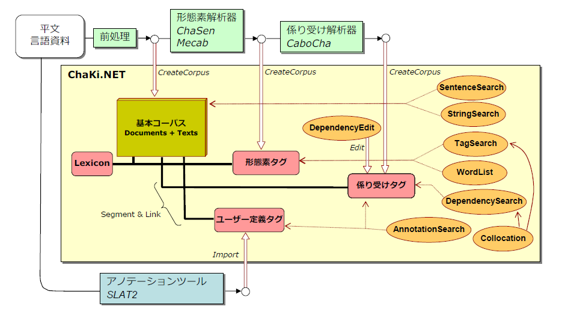

ChaKiは、自然言語資料（コーパス）をRelational Databaseを用いて管理・編集・検索するためのツールです。
ChaKiとChaKi.NET
ChaKiは、当初Win32ネイティブアプリケーションとしてMicrosoft Visual C++（GUI部）とRuby(Query部）により 作成されました(ChaKi Legacy)。2008年より、これをさらに拡張し、高速化するため、GUI部とQuery部を 統合し、またRapid Developmentを可能とするため、Microsoft .NET Framework/C#上に移植が行われました (ChaKi.NET)。
DBの形式には互換性がありませんが、Legacy版で作成したMySQLのDBを付属のChakiDump.exeによりテキストファイルに ダンプし、.NET版でインポートすることができます。逆方向の互換性はサポートされません。
ChaKi.NETの特徴
ChaKi.NETには以下の特徴があります。
- タグ付きコーパス対応
ChaSen, MeCabによる形態素解析済みテキスト、およびCabochaによる係り受け解析済みテキストを主要な 入力とし、形態素や係り受けといった「タグ」を組み合わせた条件によるKWIC検索・表示・統計機能を持っています。
- マルチRDB対応
ChaKi LegacyはMySQLのみに対応していましたが、Client-ServerでないファイルベースのDBであるSQLiteをはじめ、 各種Client-Server型のRDB（MySQL, SQLExpress, PostgreSQL)から自由に選択が可能となっています。 DBタイプは、コーパス単位で自由に組み合わせることができ、異なるタイプのDBを横断して検索することが可能です。
- SLAT(Segment and Link-based Annotation Tool)とのDBスキーマ統合（予定）
アノテーション機能を強化するため、SLATで採用されているSegment, Link, Groupをベースとした アノテーションをサポートします。従来「文節」と「係り受け関係」とで表現していた係り受けデータは SegmentとLinkによる表現形式に変更されました。
さまざまなツールとChaKi.NETの構造・機能関係図 
{kind=link}
主なマイルストーン
2011年度以降の主な開発予定項目は以下の通りです。
- 高速化
- 検索単位の柔軟な指定
- 属性情報の整理・表示・編集
- アノテーション情報による検索の拡張
- タグ（形態素・係り受け・アノテーション情報）付きコーパスフレームワークとしてベース部分の情報公開とAdd-inサポート